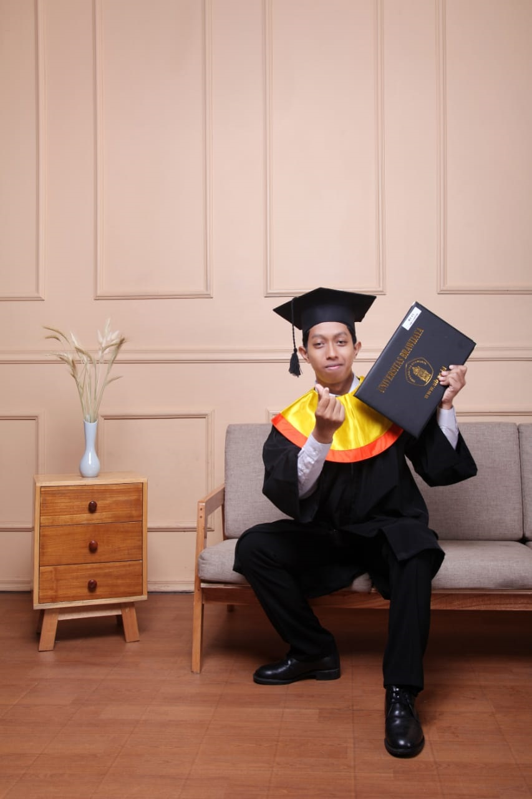

My name is Annafi Ikhwanul Azis. I am a Bachelor Degree graduated from
Brawijaya University majoring Psychology.
experience areas including
Graphic Design, UI & UX Design, UX Research and Product Design.
Currently search for career opportunity.
I was active with organization,
committees and project experiences. I can be stressed if not productive
because, I am curious about new things. A fast learner, passionate,
highly motivated, flexible and like to learn many different new things.
As well, i lie to be criticized by another person to become a better
individual and learn from mistakes.